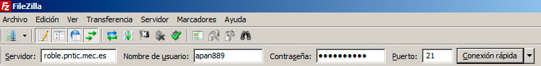
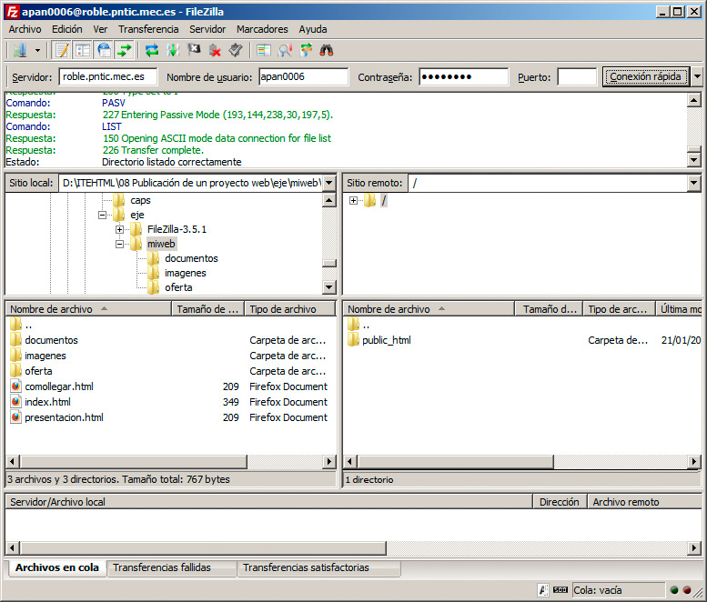
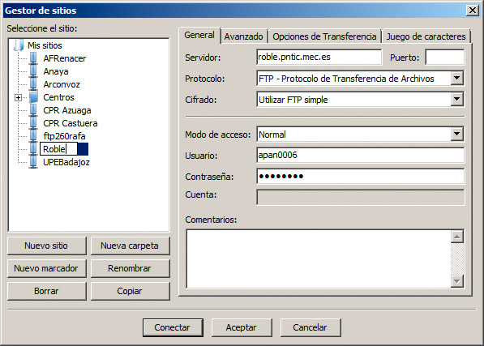
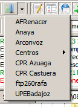

En muchos casos nuestro proveedor de Internet nos facilita espacio web en sus servidores; en otros, lo hacen nuestras propias empresas de trabajo. Si no sucede así, siempre podremos recurrir a los servidores web gratuitos. Hay multitud de servidores web que facilitan espacios gratuitos con ciertas limitaciones o publicidad para las personas o empresas que quieren crear sus primeras páginas web. No pondremos ningún ejemplo, porque resulta tan sencillo como buscar servidor web gratuito en Internet.
Si buscamos servidores gratuitos en Internet, también encontraremos muchos resultados empleando el término inglés, hosting o host, que son los términos que se emplean para describir el alojamiento o el servidor web.
Independientemente del tipo de servidor por el que optemos, al final debemos contar con tres datos imprescindibles:
- Dirección del servidor FTP: la URL con la que accederemos al servidor de FTP.
- Nombre de usuario: el nombre de nuestra cuenta.
- Contraseña: la clave para acceder a la cuenta.
Con esos tres datos seremos capaces de conectarnos a nuestro servidor de ftp en el 99% de los casos. En ocasiones puede que nos indiquen un par de datos más:
- Carpeta del servidor: ruta en la que debemos subir los archivos. Casi nunca se indica porque el propio servidor ya nos lleva a la carpeta apropiada.
- Puerto FTP: en algunos servidores hay que indicar este número, que es punto en el que el servidor escucha las peticiones que le llegan para realizar transferencias FTP. Normalmente no se indica porque es casi siempre el número 21.
Volviendo a Filezilla, encontramos que la información anterior es la que podemos introducir directamente en la barra superior, recogida en la figura:

Al hacer clic en el botón Conexión rápida, Filezilla comenzará la conexión. Si los datos introducidos son correctos, en el panel de la derecha veremos ya las carpetas del servidor, con los archivos que pueda haber. Si hay algún problema, veremos mensajes de color rojo en el panel superior indicando la respuesta errónea por parte del servidor.
La figura muestra una conexión correcta:

Nota
En algunos servidores, como el del ejemplo, al acceder podemos encontrar una carpeta denominada public_html o http. En esos casos debemos tener en cuenta que las páginas web se deben guardar en su interior para que sean visibles, no directamente en la carpeta principal del FTP.
Guardar la configuración del servidor
Presumiblemente nos conectaremos con frecuencia al mismo servidor FTP. Por ello, una vez conectados, podemos almacenar la configuración seleccionando la opción Copiar conexión actual al gestor de sitios del menú Archivo.
En la ventana de la figura sólo tendremos que indicar un nombre para el servidor y quedará almacenado:

Desde ese momento podremos conectar de nuevo con el servidor desde la lista desplegable de la esquina superior izquierda, recogida en la figura.

Pregunta de Elección Múltiple
|
URL del servidor FTP, el nombre de usuario, la clave de la cuenta, carpeta del servidor para subir los archivos y puerto FTP.
| |
|
URL del servidor FTP, el nombre de usuario, la clave de la cuenta y, sólo en algunos casos, una carpeta para subir los archivos al servidor y un puerto FTP.
| |
|
URL del servidor FTP, el nombre de usuario y la clave de la cuenta.
|